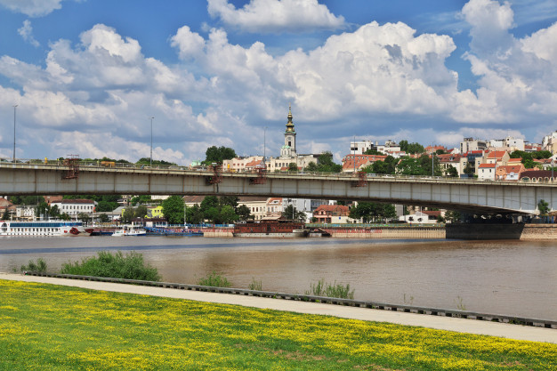

Београд има репутацију престонице која нуди свакодневни, живописан ноћни живот, са мноштвом клубова отворених до свитања широм града. Најпрепознатљивији су клубови смештени на сплавовима дуж обала Саве и Дунава.
Они који су наклоњени традиционалнијем српском ноћном животу, а љубитељи су староградске музике, типичне за северне крајеве Србије, могу да се одлуче за вече у Скадарлији, старој боемској четврти града где су се окупљали песници и уметници крајем 19. и почетком 20. века. У Скадарској улици и околини налазе се неки од најстаријих београдских ресторана. На једном крају четврти налази се некадашња најстарија београдска пивара, основана у првој половини 19. века.
Bajaga
442 do Beograda

У Београду постоји око хиљаду спортских објеката, који својим капацитетом задовољавају потребе свих врста спортских догађаја. Београд је био домаћин многим битним спортским догађајима у прошлости, као што су СП у воденим спортовима 1973, ЕП у фудбалу 1976, ЕП у кошарци 2005, ЕП у ватерполу 2006. и 2016, Европски олимпијски фестивал младих 2007, Летња универзијада 2009, ЕП у рукомету 2012, СП у рукомету за жене 2013, ЕП у атлетици у дворани 2017 и ЕП у кошарци за жене 2019.
Београд је дом два највећа и најуспешнија спортска друштва у Србији, Црвене звезде и Партизана. Два највећа фудбалска стадиона у Београду су Стадион Рајко Митић (стадион „Црвене звезде”) и Стадион Партизана (стадион „ЈНА”). Београдска арена се користи за кошаркашке и одбојкашке утакмице, заједно са Халом Пионир, док се Спортски центар „Ташмајдан” користи за ватерполо утакмице.